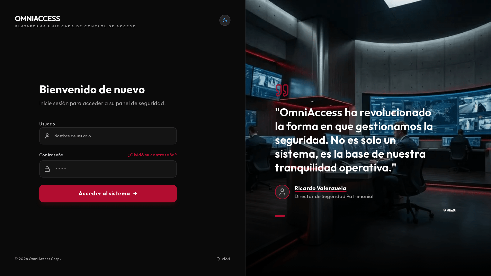
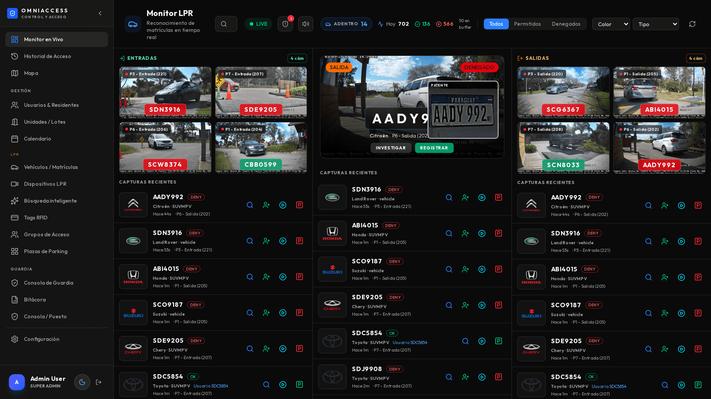
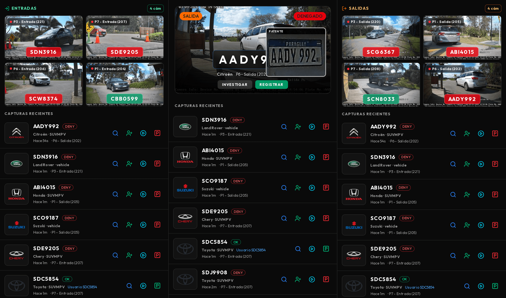
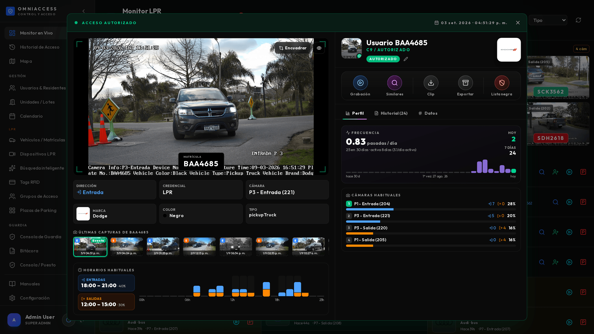
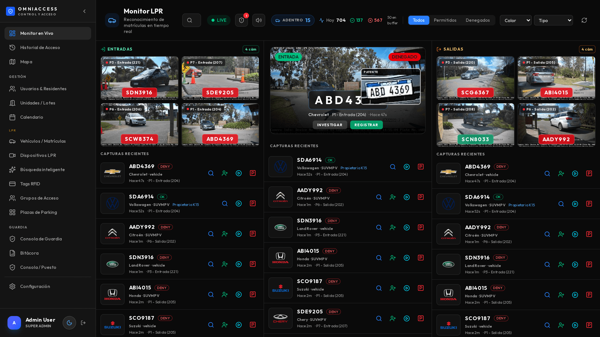
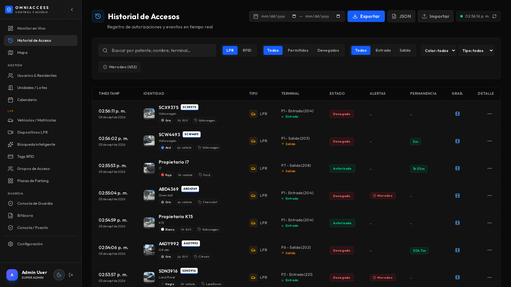
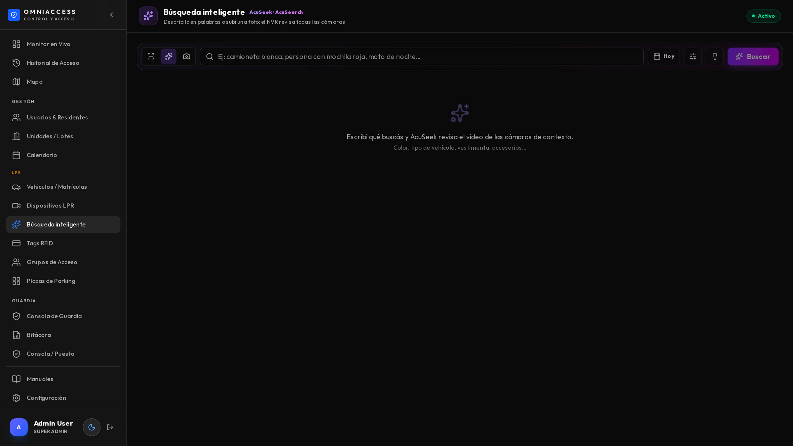
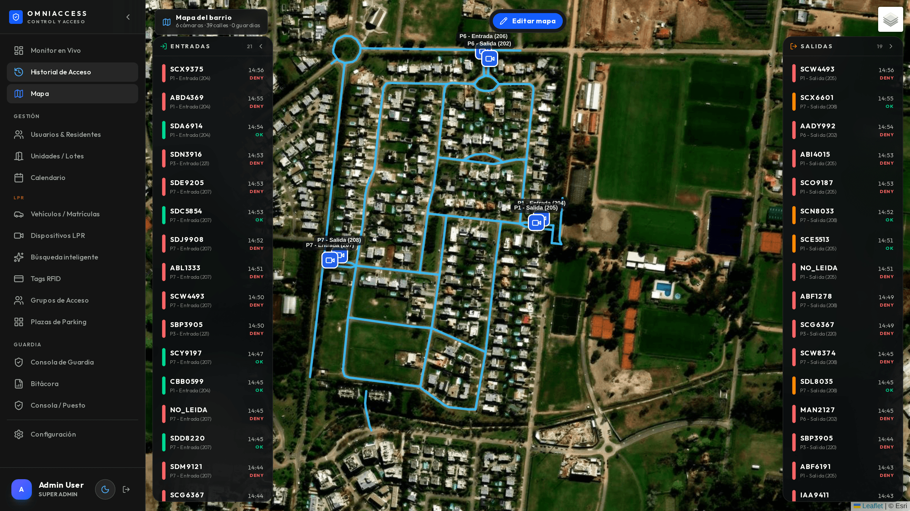
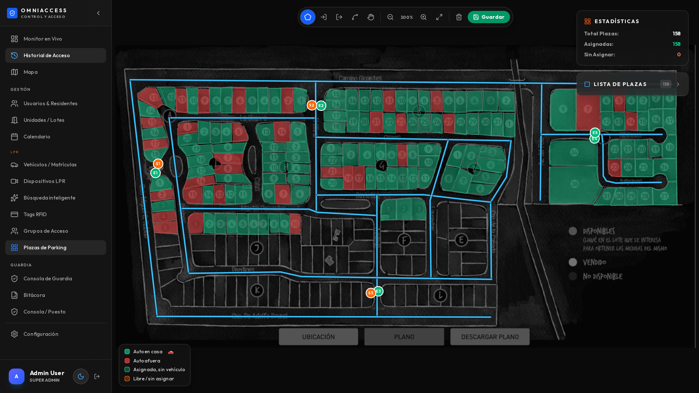

Quien opera el sistema todos los días: mira el monitor, atiende accesos, investiga una matrícula.
OmniAccess controla los accesos vehiculares de un predio cerrado leyendo la matrícula de cada vehículo que llega, decidiendo si está autorizado, y dejando registro fotográfico y en video de todo lo que pasa. Funciona sin intervención humana; el operador interviene solo cuando el sistema levanta la mano.
| Función | Qué hace exactamente |
|---|---|
| Lectura ANPR | Cada cámara lee la matrícula del vehículo que cruza su línea de detección, con la confianza de lectura (habitualmente 95–99 %) |
| Decisión de acceso | Contrasta contra la base de vehículos autorizados y su horario permitido; devuelve Autorizado, Denegado o Lista negra |
| Clasificación del vehículo | La cámara reporta marca, color y tipo (auto, camioneta, pickup, van, camión, ómnibus, buggy, moto) sin configuración adicional |
| Entrada / salida | Cada cámara está declarada como entrada o salida: el sistema sabe quién está adentro en cada momento |
| Permanencia | Al salir, calcula cuánto tiempo estuvo adentro ese vehículo |
| Merodeo | Detecta un vehículo que pasa repetidas veces por el mismo acceso sin ingresar |
| Lista de vigilancia | Matrículas marcadas (buscada, prohibida, VIP) que disparan alerta sonora y visual al aparecer |
| Registro fotográfico | Foto completa de la escena y recorte de la patente, guardados por cada evento |
| Función | Qué hace exactamente |
|---|---|
| Historial completo | Todos los accesos, filtrables por fecha, cámara, dirección, resultado y matrícula |
| Perfil de matrícula | Frecuencia de pasadas por día, cámaras habituales con desglose entrada/salida, y franjas horarias típicas |
| Búsqueda en lenguaje natural | Se escribe como se habla: "camioneta blanca ayer a la tarde", "entradas denegadas de noche" |
| Búsqueda por imagen | Se encuadra un vehículo o una persona en una foto y el sistema lo busca en las demás cámaras |
| Grabación sincronizada | Desde cualquier evento se abre el video del NVR en ese segundo exacto |
| Exportación de evidencia | Un ZIP con foto, recorte de patente, clip de video y datos del evento, listo para entregar |
| Función | Qué hace exactamente |
|---|---|
| Monitor en vivo | Pantalla de tres columnas pensada para mirarse de lejos, con video de todas las cámaras |
| Mapa del predio | Cámaras, accesos, calles, guardias con GPS y vehículos en circulación |
| Plazas de parking | Ocupación en tiempo real sobre la foto real del estacionamiento |
| Bitácora | Novedades del turno con foto, ubicación y firma del guardia |
| Alta desde el monitor | Registrar un vehículo nuevo sin salir de la pantalla donde apareció |
| Función | Qué hace exactamente |
|---|---|
| Rondas con NFC o QR | Puntos de control físicos que se marcan acercando la tablet, con hora y guardia |
| Alerta de punto perdido | Si un punto con horario asignado no se marca, avisa al puesto |
| Botón de pánico | Manteniendo 3 segundos; también con la pantalla bloqueada, por volumen |
| Hombre caído | Detecta inmovilidad prolongada y avisa si el guardia no cancela |
| Posición en vivo | El supervisor ve dónde está cada guardia, con batería y orientación |
| Trabajo sin señal | Rondas y bitácora siguen funcionando y se sincronizan al recuperar cobertura |
| Función | Qué hace exactamente |
|---|---|
| Notificaciones | Telegram, WhatsApp, correo y notificación push, con foto o clip de video |
| Reglas configurables | Qué evento avisa, a quién y por qué canal |
| Salud de equipos 24/7 | Vigila cámaras y NVR: caída, disco, memoria, reloj desfasado, motor de lectura apagado |
| Reportes | Excel y PDF con la marca del cliente |
Esta sección existe porque la mayoría de los sistemas de control de acceso vehicular hacen lo primero de la lista y nada de lo demás. Lo que sigue es lo que se nota al mes de uso.
Funciona sin internet. Todo el sistema —lectura, decisión, grabación, búsqueda, tablets— corre dentro del predio. Si se corta el enlace, se sigue trabajando igual; solo se demoran los avisos externos. La mayoría de las soluciones en la nube dejan el portón sin criterio cuando cae el enlace.
Investigación real, no solo un listado. Un evento no es una fila en una tabla: es una ficha con el perfil de comportamiento de esa matrícula, la grabación sincronizada, la búsqueda del mismo vehículo en otras cámaras y la evidencia exportable en un clic.
Búsqueda en lenguaje natural sobre los accesos. Se escribe "camioneta blanca ayer a la tarde" y responde al instante, sobre la base propia y sin depender del grabador. Es la diferencia entre encontrar algo en segundos o revisar video durante una hora.
El guardia es parte del sistema. Rondas, pánico, hombre caído y bitácora en la misma plataforma que los accesos, no en una aplicación separada de otro proveedor.
Se anticipa a las fallas. El sistema vigila sus propias cámaras y avisa cuando una deja de leer matrículas —incluso cuando sigue mostrando imagen y parece sana. Es la falla que en otros sistemas se descubre recién cuando alguien necesita una evidencia que nunca se grabó.
Evidencia lista para entregar. Un ZIP con foto, patente, video y datos, armado en el momento. Sin pedirle nada al proveedor ni exportar desde tres sistemas distintos.
Multi-marca. Convive con cámaras Hikvision, Avicam y Akuvox, y con grabadores existentes: no obliga a cambiar todo el parque instalado.
Este manual es para quien está frente al sistema todos los días: el guardia de la garita, el operador del puesto de monitoreo, el supervisor que revisa lo que pasó anoche.
No explica cómo se instala ni cómo se configura — eso está en los manuales del Instalador y del Administrador. Acá está qué ves, qué significa y qué hacés en cada situación.
Cada vez que un vehículo llega a un acceso, la cámara lee la matrícula y el sistema decide, en menos de dos segundos, si ese vehículo está autorizado. La decisión queda registrada con la foto, la hora, la cámara y la dirección (entrada o salida). Nada se pierde: aunque nadie esté mirando la pantalla, todo queda grabado y buscable.
Desde que el vehículo cruza la línea de detección hasta que aparece en el monitor pasan entre 1 y 3 segundos. Si tarda más de 10 segundos de forma habitual, avisá al administrador: algo está degradado (red, cámara o servidor).
| Estado | Color | Qué significa | Qué hacés |
|---|---|---|---|
| Autorizado | Verde | La matrícula está registrada y habilitada en este horario | Nada. Se abre solo (si hay barrera automatizada) |
| Denegado | Ámbar | La matrícula no está registrada, o está fuera de su horario | Verificás con el residente antes de abrir |
| Lista negra | Rojo + sonido | La matrícula está marcada como buscada o prohibida | Seguís el protocolo del cliente. No abras sin autorización |
Un "Denegado" no es una alarma: la enorme mayoría son visitas, proveedores y vehículos nuevos que todavía nadie registró. La alarma real es el rojo.
El sistema funciona en cualquier navegador moderno. No hace falta instalar nada en la PC del puesto.

Si te olvidaste la contraseña, el administrador te la restablece: no hay recuperación por correo en instalaciones sin internet.
Una sesión abierta en el puesto de monitoreo queda abierta. Si el puesto es compartido entre turnos, cerrá sesión al irte — todo lo que se haga queda registrado a tu nombre en la auditoría.
Es la pantalla donde vas a pasar el turno. Está pensada para mirarse de lejos: los datos importantes son grandes y los colores dicen todo sin que tengas que leer.

1Menú lateral: el resto de las pantallas del sistema2Barra de estado: conexión, vehículos adentro y totales del día3Filtro rápido: todos, permitidos o denegados4Mosaico de cámaras de entrada, en vivo5Foco central: la última detección, en grande6Mosaico de cámaras de salida, en vivo7Capturas recientes: cada lectura con matrícula, marca y tipoLa pantalla tiene tres columnas:
| Indicador | Qué te dice |
|---|---|
| LIVE (punto verde) | El monitor está recibiendo eventos en tiempo real. Si se pone gris, perdiste conexión con el servidor |
| ADENTRO | Cuántos vehículos entraron y todavía no salieron |
| Hoy | Total de lecturas del día, y el desglose de autorizados y denegados |
| En buffer | Eventos recibidos que todavía se están dibujando. Si crece mucho, la PC del puesto está exigida |
| Campana | Alertas sin leer (lista negra, merodeo, cámara caída) |
| Parlante | Activa o silencia el sonido de las alertas |
Los botones Todos / Permitidos / Denegados filtran la vista. Los desplegables Color y Tipo filtran por características del vehículo — sirven cuando estás buscando "la camioneta blanca que acaba de pasar".

Muestra la última detección con:
Si la lectura salió mal (una letra cambiada), no la corrijas en el momento: registrá el vehículo con la matrícula correcta y avisá al administrador. Una matrícula que se lee mal de forma repetida es un problema de calibración de la cámara, no de ese auto.
Cuando entra un vehículo en lista negra suena una alerta y la tarjeta queda resaltada en rojo con un anillo. El sonido se repite hasta que abrís el evento. Si el puesto es silencioso por la noche, usá el botón del parlante — pero acordate de volver a activarlo.
Hacé clic en cualquier captura y se abre la ficha completa de ese acceso. Es la herramienta que más vas a usar cuando algo hay que investigar.

| Acción | Para qué sirve |
|---|---|
| Grabación | Abre el video del NVR en ese instante exacto, con línea de tiempo |
| Similares | Busca ese mismo vehículo en las otras cámaras del barrio |
| Clip | Descarga un video MP4 de 30 segundos alrededor del evento |
| Exportar | Descarga un ZIP con la foto, el recorte de patente, el clip y los datos — es lo que se entrega ante un reclamo |
| Registrar | Da de alta un usuario con esa matrícula, sin salir de la pantalla |
| Lista negra | Marca esa matrícula: la próxima vez que aparezca, suena la alerta |
El clip y el ZIP se arman en el momento pidiéndole el video al NVR: tardan entre 5 y 15 segundos. Si el navegador parece trabado, esperá — se está descargando.
Perfil — el comportamiento habitual de esa matrícula:
Esto sirve para responder rápido la pregunta que importa: ¿este vehículo es habitual acá o es la primera vez? Un auto que entra todos los días a las 8 y hoy entra a las 3 de la mañana es un dato, aunque esté autorizado.
Historial — todos los accesos anteriores de esa matrícula, con fecha, cámara, dirección y resultado.
Datos — la información técnica del evento: dispositivo, ubicación, identificador, canal del NVR y los metadatos que envió la cámara.

Con Encuadrar dibujás un recuadro sobre el vehículo (o sobre una persona) y el sistema lo busca en las cámaras de contexto del barrio. Sirve para reconstruir un recorrido: entró por el portón 1 y querés saber por dónde siguió.
La búsqueda tarda entre 10 y 40 segundos según el rango de días. Mientras trabaja ves una animación con el avance; podés cambiar el rango (24 h / 3 días / 7 días) y el nivel de parecido.
Esta búsqueda mira las cámaras de contexto, no las de matrículas. Las cámaras de los portones están dedicadas a leer patentes y no alimentan este buscador. Es una limitación del hardware, no una falla.

1Historial completo de accesos2Columnas: foto, matrícula, acceso, dirección, decisión y grabaciónTodos los accesos, con filtros por fecha, cámara, dirección, resultado y matrícula. Cada fila abre la misma ficha del evento.
La columna Grabación indica si ese acceso tiene video disponible en el NVR. Si dice "sin NVR", esa cámara no está mapeada a un canal de grabación.
Es la forma rápida de encontrar algo cuando no tenés la matrícula. Se escribe en lenguaje normal.

Tiene tres modos, que se eligen con los íconos de la izquierda:
| Modo | Qué busca | Cuándo lo usás |
|---|---|---|
| Accesos (verde) | Los accesos de los portones, por descripción | "Camioneta blanca que entró ayer a la tarde" |
| Por texto (violeta) | Las cámaras de contexto, por descripción | "Persona con mochila roja" |
| Por imagen (fucsia) | Las cámaras de contexto, a partir de una foto | Tenés una foto y querés saber dónde más estuvo |
En el modo Accesos podés combinar: color, tipo de vehículo (auto, camioneta, pickup, van, camión, ómnibus, buggy, moto), marca, matrícula, acceso (P1 a P7), entradas o salidas, autorizados o denegados, franja del día (mañana, tarde, noche, madrugada) y fechas ("hoy", "ayer", "esta semana", "últimos 3 días").
Ejemplos que funcionan tal cual:
camioneta blanca ayer a la tardeautos negros por P7entradas denegadas hoybuggy el fin de semanaSCT4403Debajo del buscador aparecen unas etiquetas verdes con lo que el sistema entendió. Si escribís algo que no reconoce, te lo dice — así sabés por qué el resultado no es el que esperabas.
La búsqueda por Accesos es instantánea (menos de 1 segundo): busca en la base de datos propia. Las otras dos consultan al NVR y tardan entre 10 y 40 segundos.

Muestra el plano del barrio con las cámaras, los accesos, las calles y — si hay guardias con tablet — su posición en tiempo real.

Sobre la foto real del estacionamiento, cada plaza se pinta de verde (libre) o rojo (ocupada), según las lecturas de matrícula. Al pasar el mouse por una plaza ocupada ves qué vehículo está.
Los guardias que recorren usan una tablet Android con la aplicación de OmniAccess: rondas con etiquetas NFC, botón de pánico, detección de hombre caído, bitácora con foto y posición en el mapa.
Desde el puesto de monitoreo, lo que aportan las tablets se ve en tres lugares:
El funcionamiento completo de la tablet está en un manual aparte: Manual de la Tablet, pensado para el guardia que la usa. Acá alcanza con saber qué llega al puesto y qué hacer con eso.
| Alerta | Qué significa | Qué hacés |
|---|---|---|
| Pánico | El guardia mantuvo el botón 3 segundos | Llamalo por radio. Si no responde, mirá su posición en el mapa y enviá apoyo |
| Hombre caído | La tablet quedó inmóvil y el guardia no canceló en 30 s | Igual que pánico. Puede ser falsa alarma: confirmalo por radio |
| Punto de ronda vencido | Un punto con horario no se marcó a tiempo | Consultá por radio. Anotá el motivo en la bitácora |
Una alerta de pánico llega al puesto en 2 a 4 segundos desde que el guardia suelta el botón. Si un guardia avisa que activó el pánico y en el puesto no sonó nada, es un problema técnico: reportalo de inmediato.
Si no tenés autorización para dar de alta, dejá la novedad en la bitácora con la matrícula y que la resuelva el administrador.
Usá Exportar en la ficha del evento. El ZIP contiene:
captura.jpg — la foto completa del momentorecorte_matricula.jpg — el acercamiento de la patenteclip_30s.mp4 — el video del NVR alrededor del eventoevento.json — todos los datos (hora, cámara, vehículo, decisión)Es material suficiente para una denuncia o un reclamo al seguro.
Si el contador de "Hoy" no sube y hace rato que no aparecen capturas nuevas, avisá de inmediato al administrador. No es normal y tiene diagnóstico conocido. Mientras tanto, el control de accesos hay que hacerlo a mano.